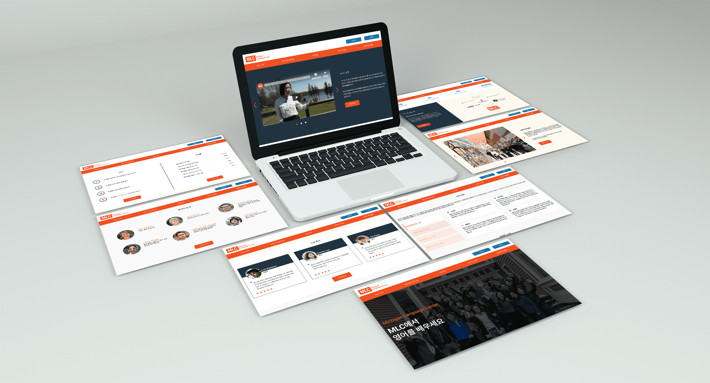
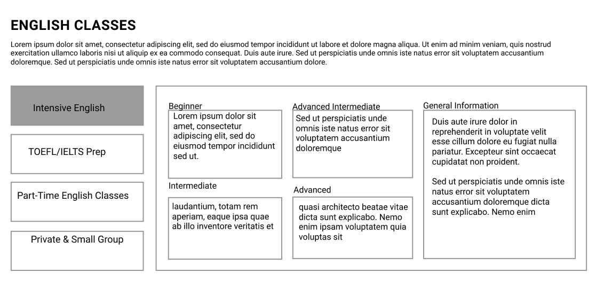
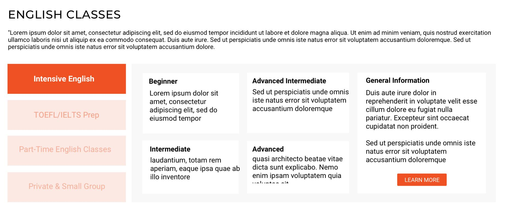
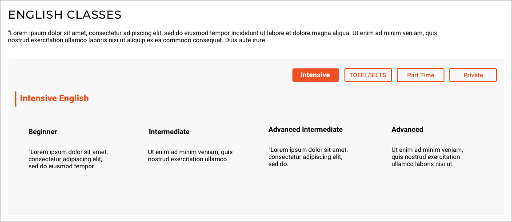
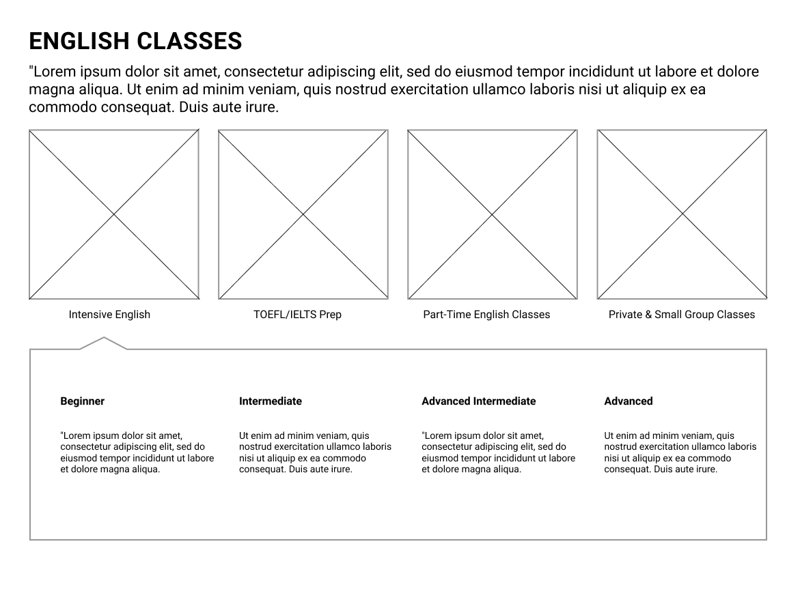
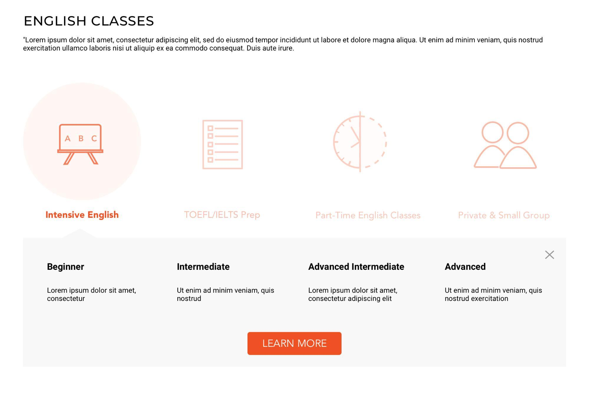

Michigan Language Center
User Research + Web Design + Interaction Design
Overview
Executive Summary
Michigan Language Center (MLC)’s mission is to teach English and American Culture to people from around the world and empower them in their university, career, and personal pursuits. Together, students and MLC faculty create a community of support, friendship, and learning. MLC’s website is their main touchpoint with the world, informing prospective students of their exceptional ESL programs and convincing those interested to apply. Because MLC’s prospective students (users) are mostly non-native English speakers, there exists a challenge in effectively communicating to people of different languages, cultures, and backgrounds, in addition to converting these diverse users into applicants. We are seeking to understand how cultural nuances interplay with web user experiences and how MLC’s site can feasibly accommodate their global audience while maintaining a seamless and intuitive user experience. We will be focusing particularly on the specialized landing pages they have implemented and synthesizing our findings into a design for a Korean landing page to support their outreach efforts this year.
Role
UX Researcher
UI/UX Designer
Research
- Background Research
- Heuristic Evaluations
- Competitive Analysis
- Usability Testing
- User Interviews
- Empathy Mapping
- Affinity Diagramming
- Personas & Scenarios
- User Journey & Task Flow
- Sketches & Brainstorming
- Wireframing
- Interactive Prototyping
Tools
- Figma
- Sketch
- InVision
- Adobe Illustrator
- Adobe Photoshop
Problem
In an attempt to capture their diverse student body without the overhaul of designing several versions of their main website, MLC has created specialized landing pages for Japanese, Chinese, Portuguese, Spanish, and Arabic speaking students. These pages entice users to enter their contact information, enabling MLC to reach out and personally assist the user’s needs. The landing pages have succeeded in lead generation and preventing users from floating on their site. Still, these pages only provide basic information about MLC’s offerings, are identical in design and content except for translation, and link everything to the main website. Because every prospective student must go to the main website if they want to find more details about program offerings and apply, we see opportunities in creating a better transitional experience from specialized landing page to main website through reconsideration of their content and functionality.
Project Goals
- Increase the number of online applications from students residing in Korea
- Achieve acceptance of the design and experience of prototype from target user group (Korean speaking students)
- Create a more seamless experience for students navigating from the specialized landing pages to the main website
- Consider the cultural nuances in the design of MLC’s main website and specialized landing pages for prospective students
Research
Research Goals & Questions
Goals
- Interview target users and current students of MLC to collect information on potential cultural nuances or existing design flaws on MLC website’s landing pages
- Evaluate the usability of the design and content of existing landing pages
- Understand the end-to-end experience of prospective students moving across landing pages
- Understand what an ideal discovery/application experience would be for prospective students
Questions
- Do the same heuristic rules and principles apply across different cultures?
-
What are the pain points and general perceptions of the current web experience?
- Is there any information lacking when students explore MLC’s specialized landing pages?
- How does applying for schools, and programs for study abroad, differ in the US and Korea?
- What information or qualities do prospective students value in selecting a language program (abroad)?

Literature Review
One of our main research goals was to learn about how design principles and standards vary across cultures, if at all. Fortunately, we were able to find numerous scholarly articles and academic research studies relating to our topic of international usability and the implications of culture on web/UI design. According to every source we read, cultural contexts significantly influence the design and the expectations users bring with them as they interact with online interfaces. Key design components involved at play within cultural contexts include not only local language and time-date formatting, but also layout, symbols, content and structure, navigation, multimedia, and color. For example, in Germany, a “low context culture”, messages are aimed to be complete and concise while in Japan, a “high context culture,” messages are typically multilevel and implicit.
Another major finding was Geert Hofstede’s model for dimensionalizing cultures, which has been frequently referenced in discourse related to global UI design. After conducting hundreds of interviews of IBM employees around the world, his team was able to identify a handful of consistent dimensions upon which cultures can be compared. Dimensions embedded in all cultures include power distance, uncertainty avoidance, individualism vs. collectivism, masculinity vs. femininity, long-term vs. short-term orientation, and indulgence vs. restraint. Experts in global web UI design applied Hofstede’s principles, offering ways each one may influence design. Using uncertainty avoidance (which refers to the way cultures tend to react to unknown matters) as an example, The Sabena Airlines website, a Belgian site who ranked a UA score of 94 (the highest in the study) was compared to The British Airways website, a UK website which received a UA score of 35. The Belgian website included a clean and simple home page with limited choices to mitigate the ambiguity of their site. The British Airways site, on the other hand, had more information, complexity, and interface controls, aligning with low UA culture tendencies to show maximal content and less control of navigation. While there was a vast amount of material that supports the impact of cultural nuances on web design, there is information lacking on how organizations can feasibly target an international market.
User Interviews
We conducted user interviews with three MLC students. The students were from Turkey, South Korea, and Saudi Arabia, and all students were looking to better their English in order to study at American universities after graduating from the MLC. We asked about the background of these students, how they found out about the MLC, their English skills, and, if applicable, their experience with the MLC website. All three of our students had a particular interest in studying in the Midwest, and heard about the MLC through word of mouth rather than research or the website. They reported that they all possessed some level of English proficiency at the time they were applying to the MLC and interacting with their website. We found that the students had not used the MLC website much besides when applying, but they regarded it positively in comparison to websites in their home countries. The students also had very positive experiences with their English classes at the MLC so far.
Usability Testing
MLC Main Website
- Difficulty understanding “University Pathway” section
- Errors in translation
- Emphasis on heavily nested navigation bar
- Inability to translate application after Step 1
- Overall high ratings regarding trust and professionalism
- Loss of progress in application process
Specialized Landing Page
- Pretty informative information
- Want for more engaging content
Heuristic Evaluations
Aesthetics and Minimalist Design
- PROBLEM: Busy and information dense landing page
Error Prevention
- PROBLEM: Loss of progress in application process
Match Between System and Real World
- PROBLEM: Inability to translate application after Step 1
- PROBLEM: Spotty translation across website
Define

Personas & UX Requirements
Primary Persona - Prospective Korean Student
- Clear explanation of what MLC’s ‘University Pathway’ offers to students
- Smoother transition from the Korean landing page to the main MLC website
- Maintain a professional appearance throughout the website
Secondary Persona - Korean Educational Agent
- Clear logistical information available about their English programs
- Class curriculum & Professors
- Showcase socially engaged learning opportunities as well as ability for students to learn in small groups
Early Ideas
After gathering our UX requirements from research, we began brainstorming what design direction we would follow. To help determine this, we used our requirements to redefine our problem statement with greater focus.
Redefined Problem Statement
How might we create a web experience for Korean prospective students that is culturally familiar, leverages their value of trust, and prioritizes their desired educational experiences.
Three Design Themes
Leveraging the research we conducted previously, we decided to continue the design process by designing three design styles: Information Dense, Visual/Aesthetic, and Interactive.
Information Dense
From the background research and heuristics evaluation of the three Korean websites, we recognized they all tend to have all the information in a single page for users to easily navigate themselves depending on their interests. In order to satisfy this perspective of Korean users, we’ve created an information dense design with all information in a single page and less interactions.
Visual/Aesthetic
For the visual design, with a client’s request, we wanted to reduce the burden on translation. With the less translation, the users will be able to understand the content based more on the visual aids rather than text. In addition to this, westernized websites take on a more aesthetic and minimalist approach to website design. By including this design, we hoped to also understand if Korean users still preferred the information dense design over what is considered the norm, and provides the best user experience here in America.
Interactive
The interactive design consists of elements from both the information dense design as well as the visual and aesthetic. However, the interactive design includes more navigations to make a more engaging user experience with the page. The interactive design serves as a nice middle ground between the information dense design and the visual one which falls on opposite sides of the spectrum.
Design + Prototype
Wireframes
After we sketched our ideas on paper, we created low-fi wireframes on sketch that incorporated our design ideas that would satisfy our UX requirements. We took the approach of creating wireframes for three different phases: interactive, visual, and information dense. Each team member took a different section and created four to five screens. In addition to working on the individual sections that would comprise the specialized landing page, we also took time to create wire frames for the transition page.
Full Wireframes
Information Dense Design Wireframe Visual/Aesthetic Design Wireframe Interactive Design WireframeMid-Fidelity Designs
After feedback from our client and team, we proceeded with three designs—information dense, aesthetic/visual, and interactive—to solicit user feedback, enhancing them with brand details for more accurate insights. Each team member updated their section before recombining them into the larger designs, with a challenge being to ensure cohesion. We chose to continue with these diverse designs to validate our research on Korean design standards, focusing on user requirements such as color use, professional imagery, and realistic text in our mid-fi prototypes.
Full Mid-Fidelity Designs
Information Dense Mid-Fidelity Design Visual/Aesthetic Mid-Fidelity Design Interactive Mid-Fidelity DesignWireframes + Mid-Fidelity Designs: English Classes Section
Information Dense
Lo-Fi
Mid-Fi
Visual/Aesthetic
Lo-Fi

Mid-Fi
Interactive
Lo-Fi
Mid-Fi
Design Rationale
Content
When asked about Korean websites they enjoy using, two students mentioned Naver, appreciating its role as a comprehensive platform for search, news, and entertainment in South Korea. We conducted a heuristic evaluation on Naver's information-dense website, which influenced the design of our information-dense landing page. One of the main differences brought up in one of the feedback about Korean websites and American websites is the way information is organized. Many Korean websites use navigation bars like Naver, that expand into a full list where users are able to easily see which pages are under which section since all of the information is presented in front of them. While it is not common for landing pages to have navigation bars, we plan on exploring different ways we can present more information in our sections, to provide Korean users with a more familiar and organized user experience.
Visa, Tuition, Classes
Other sections that were perceived as important were visa, tuition, and classes. Visa, which is something that is not currently offered on the MLC’s specialized landing pages garnered interest, and validated our decision to include it in our specialized Korean page. Tuition, also not currently included on the MLC’s specialized landing page but also not specifically included in our new design either. Given this user feedback, we plan on incorporating tuition into our designs. Finally, while English classes were included as an important section, we received a lot of feedback on how we could improve by including more information about professors and specifics on subject matter.
Reviews
Some overarching themes we found from our remote usability test was importance of the review section. Every student mentioned student reviews when asked which sections were essential in the construction of the landing page, and were brought up again in the evaluation of our designs. This validated our research at the beginning of the semester that suggested Korean users value credibility.
Transition Page
For the transition page design, the user would automatically be taken to this transition page which served as a loading page as they redirect to the main MLC website. This approach was much more visual, fitting well with our visual/aesthetic design theme.
For the pop-up transition page, users would still be on the specialized landing page when this page is displayed. Rather than having a loading page like the design above, there would be no delay in moving from the specialized landing page to the main website if they were to click on the appropriate button in the pop-up window.
Overall, the transition page was very well received, and users like having at least some sort of indicator that they were leaving the landing page and transitioning into the main website. Some small recommendations were to make the pop-up transition page less wordy and use only one button instead of two, to include the MLC logo in the redirecting page, and to change the exit button to a “Go Back” button instead.
Full-Screen Page
Lo-Fi

Mid-Fi

Pop-Up
Lo-Fi

Mid-Fi

Usability Testing
For our stand up presentation, we also received valuable feedback from our peers and teaching staff on more design specifics. Recommendations were made to make sure all design elements were consistent throughout all three designs, to bring more attention to the tab bar in the English classes section, and be wary of the landing page coming off as a marketing page rather than an informative piece.
During Week 10, a Korean intern working with the MLC arrived and was able to participate in an informal user interview and usability test of our mid-fi designs. From talking with the Korean intern, we learned about his preference towards the Interactive Design of the Korean Landing Page opposed to the Aesthetic and Information Dense. He also suggested we include more information about the MLC”s faculty and to go more in depth about the curriculum for the MLC’s English programs. Finally, he also recommended diversifying the reviews and testimonials left by students mentioning that not only would he like to see responses from Korean students, but from students of different nationalities and backgrounds as well.
Utilizing the Korean intern’s personal network, we crafted a remote usability test so we could assess our designs recruiting four students who fit our personas more closely than individuals we interviewed before. Our first round of usability tests were conducted with students who have taken English language classes before and were raised in Korea. Our remote usability test was broken up into two different parts, one section to gather background information on the student such as their fluency with English, and the other section with questions prompting the participant to answer questions regarding our three designs.
Regarding general information about our participants, we were able to test our designs with a diverse group who provided valuable insight into changes that would improve the overall design of our Korean landing page. Each of them ranked themselves as being somewhat-almost fluent and planned on doing different things with their English after graduating from their respective English Language Schools.
Final Design
The mixed feedback from our remote usability tests confirmed the value of exploring all three design themes. We learned that an ideal design would blend elements from each theme, though aligning this with user expectations—many of whom viewed our designs as complete websites rather than landing pages—presents challenges. To address this, we aim to recruit more in-person users to better demonstrate the landing page's role and transition to the full website. For the hi-fi prototype, we sought a balance by integrating favored elements from each design and refining promising but imperfect sections. In our next iteration, we plan to secure more definitive insights by targeting users more aligned with our primary persona.
Final Interactive Design

Validation
- How credible and professional does the landing page appear to target users?
- How transparent and smooth do target users find the transition from landing page to main website in comparison to the current experience?
- Does our landing page have the information and content needed to interest users in the MLC? What would users’ next steps be after interacting with our design?
- How understandable is MLC’s University Pathway program compared to the existing landing page? How valuable is this information to users?
A/B Testing
Our team is interested in comparing our design with the landing page that MLC would have eventually built using their existing template. By having one group of users only interact with the original design and another group only interact with the new design, we hope to leverage issues recognized in the old design to validate our design decisions in the new one. Evaluating these results will give us insight into whether or not the research we conducted on Korean culture and usability has a positive impact on the overall user experience.
If our design decisions are validated, we will have more confidence in the efforts made in our research/design processes and may even be able to recommend significant areas to consider if/when MLC redesigns their other specialized landing pages.
Validation Analysis
As shown in the graph of Rate the Professionalism of Website, Design B (red) has a slightly higher professionalism rating than Design A (blue), This indicates an improvement in the overall professionalism with the landing page re-design. Based on our feedback, we believe that the inclusion of more refined language in the re-design would lead to higher scores.
As part of our A/B Testing, we asked users to rank categories found on the MLC landing page in order of importance. The graph of Ranked as Most Important Sections highlights the top choices of each user with University Pathways and Reviews having the highest ranks of importance. Both of these sections are portions that we improved on or added in our re-design. We also added the sections for Visas, Tuition, and Professors - decisions that are also validated by these findings.
Validation Insights
- Permanency of navigation bar
- Perception of professionalism
- Section choices validated
- Progression the transition experience
Design Recommendations
- Navigation Selection Indicator
- Clearer Section Headers
- Translation Improvement